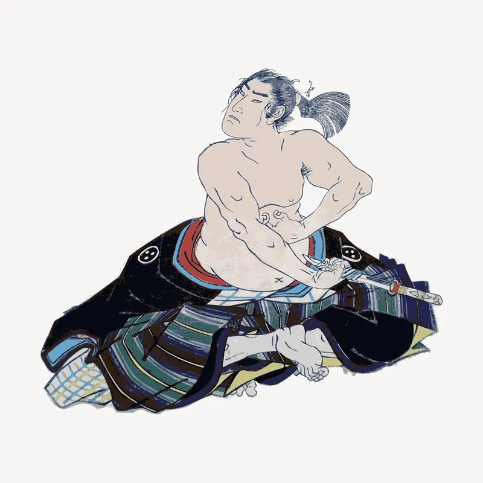

De Japanners staan bekend om hun bereidheid om heel hard te werken. Kinderen worden geleerd respect te tonen voor anderen, vooral ouders en bazen. Ze leren te doen wat het beste is voor hun familie of bedrijf en maken zich minder zorgen over hun eigen behoeften.
Japans eten is heel anders dan eten in westerse landen. Er is veel rijst, vis en groenten, maar weinig vlees. Met weinig vet of zuivel is dit dieet erg gezond, waardoor Japanners gemiddeld langer leven dan enig ander volk ter wereld.
Geschiedenis in cultuur
Geschiedenis speelt een belangrijke rol in de Japanse cultuur. Veel kastelen en straten zijn nog bewaard gebleven zoals ze gebouwd zijn. Met een polytheïstische cultuur zijn er ook veel heiligdommen en tempels in heel Japan.
Feesten
Met een gematigd klimaat heeft Japan vier mooie en verschillende seizoenen. Deze seizoenen, samen met regionale verschillen in de archipel, hebben in Japan geleid tot verschillende lokale culturen, gewoonten en 'matsuri' of festivals. Deze festivals zijn afgeleid van de unieke Shinto-religie van het land en zijn nauw verwant aan de religieuze overtuigingen van het Japanse volk en aan gebruiken die zijn ontwikkeld in het agrarische verleden van Japan.
Festivals zijn, op enkele uitzonderingen na, meestal geclusterd rond traditionele feestdagen. De meesten begonnen om goede oogsten te vieren of om ervoor te bidden. Ze hebben vaak grote processies en lokale festivalmarkten. Terwijl de feestelijke sfeer de lucht vult, stijgt het enthousiasme en de opwinding van de mensen. Zorg ervoor dat je minstens één matsuri geniet als je de kans hebt!
Ouderen hebben altijd voorrang
Japan is nog steeds een samenleving waar de hiërarchische verhoudingen erg strikt zijn, dus zelfs als je weet dat iets duidelijk beter is vanuit rationeel standpunt, kun je het niet doen tenzij iemand hogerop toestemming geeft. Jongeren die in zo'n cultuur zijn opgegroeid, stoppen vaak met denken en geven het op, in de veronderstelling dat hun mening toch niet wordt gehoord. Het dalende geboortecijfer en de vergrijzende bevolking verergeren de situatie omdat politici steeds meer beleid promoten dat ouderen bevoordeelt.
Japanse Eer cultuur
Het Japanse woord "seppuku" vertaalt naar maag snijden, en het is een vorm van Japanse rituele zelfmoord. In het verleden mocht alleen de samurai-klasse seppuku uitvoeren als onderdeel van de bushido-traditie, wat de weg van de krijger betekent. Samurai gaven er de voorkeur aan eervol te sterven in plaats van in de handen van hun vijanden te vallen en gemarteld en gedood te worden.
Seppuku werd in 1873 afgeschaft na de Meiji-restauratie, die de opkomst van Japan als een gemoderniseerde en verwesterde natie mogelijk maakte. Sindsdien wordt echter vrijwillige seppuku beoefend. Volgens de Japanse cultuur is het heel normaal om zelfs vandaag de dag zelfmoord te plegen als een persoon iets verkeerds doet dat zijn eer kan aantasten of andere mensen kan schaden - vergelijkbaar met de traditionele seppuku-manier door de maag door te snijden.
"Sakura" (kersenbloesems) zijn van groot cultureel belang in Japan en ze zijn rijk aan symbolen, variërend van het vertegenwoordigen van wolken tot Japans nationalisme. Maar ze vertegenwoordigen ook de menselijke sterfelijkheid. Ze zijn mooi en van korte duur, ze duren maar een paar dagen. In tegenstelling tot andere bloemen, laten kersenbloemen hun bloembladen vallen op het hoogtepunt van hun schoonheid zonder te verkleuren, te verwelken en af te sterven. De Japanners geloven dat mensen zijn opgeleid om te sterven met eer en schoonheid, net als kersenbloesems. De extreme schoonheid en snelle dood van de kersenbloesems worden geassocieerd met het leven van een eerbaar persoon. Een eerbaar persoon zou moeten sterven zonder zijn eer en goede reputatie te verliezen, zeggen de Japanners.
